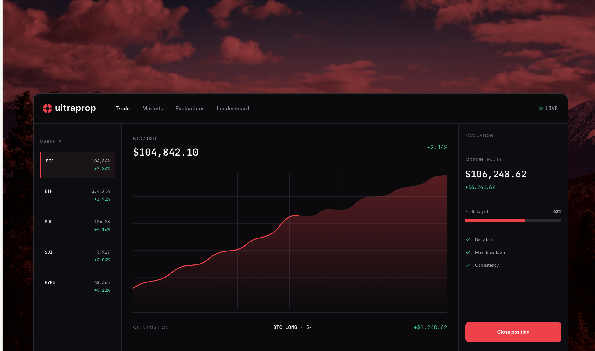
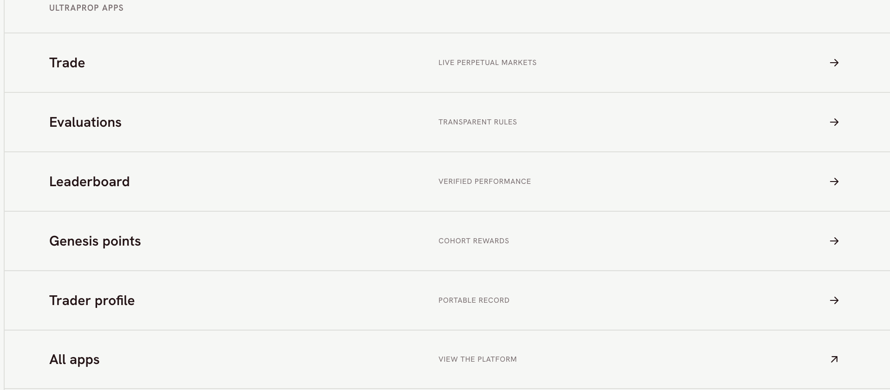
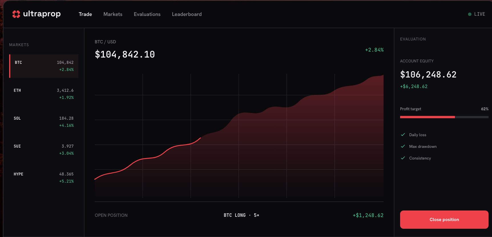
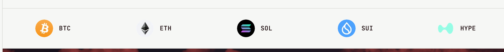
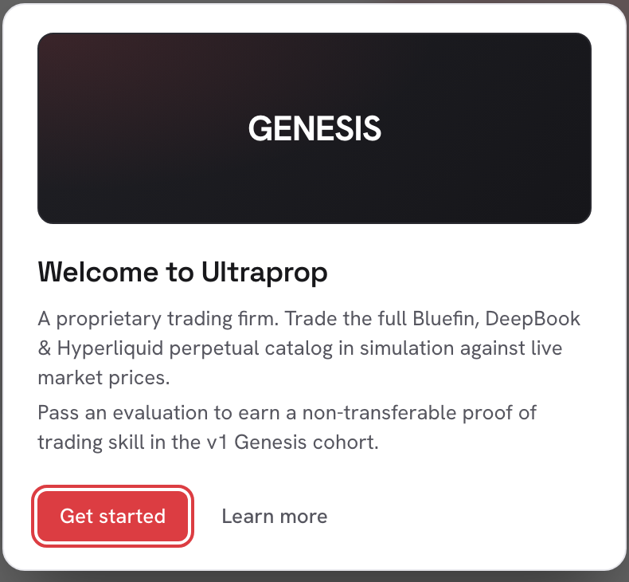

On-chain prop firm · Sui
UltraProp
Prop firms ask traders to trust hidden execution, discretionary rules, and a track record that disappears into a private database. UltraProp makes all three visible: trade against live market prices, clear an evaluation whose rules are enforced by contract, and keep a portable proof of how you performed.
See Live
The problem
Prop firms fund traders who prove themselves on an evaluation. The model works, but almost every part of it happens somewhere the trader can't see. Fills come from execution you can't inspect. Rules get interpreted by an operator after the fact. And when you pass, the proof lives in that firm's database, which means it isn't really yours and doesn't travel with you.
The result is a category where traders are asked to trust a counterparty that also profits from their failure, and where a genuinely good track record can't be carried anywhere.
The design problem: how do you make a trader believe the rules aren't moving, when the entire industry's reputation says otherwise?
Design approach
On-chain settlement gives you one thing a traditional prop firm can't offer: the rules can be published and enforced by something neither side controls. A Sui Move contract is the only execution surface, it takes trade intents, models fills deterministically, enforces the limits, and emits the pass or fail. No operator override exists to be argued with.
That's the technical foundation. The design job was to make it legible, because a guarantee nobody can see is worth about as much as a promise. Three decisions carried most of that weight.

Put the verdict next to the trade
In a normal terminal, the chart takes the whole screen and your evaluation status lives on another page. Here they share one view: price and position on the left, and a permanent evaluation rail on the right carrying account equity, profit-target progress, and live checks on daily loss, max drawdown and consistency. You never have to go and ask how close you are to failing, the answer is already on screen while you size the trade.

Tiers as a ladder, not a price list
Starter, Basic and Pro differ on four numbers: account size, profit target, max drawdown and leverage, $10,000 at +8% with 10% drawdown, up to $50,000 at +10% with 8%. Presenting them as one row of comparable figures, with the higher tiers visibly locked until you've earned them, turns pricing into progression. The trader reads it as "what do I unlock next" rather than "what do I buy".
Tell the truth when the feed drops
When the price feed reconnects, the app says so in a banner: "Reconnecting to the live feed, prices are momentarily not updating. Trading stays open." It would be easy to hide that. Naming the degradation, and being precise about what still works, is worth more here than a seamless-looking lie, in a product whose whole pitch is that you can trust what you're seeing, the moment something breaks is the moment the pitch is tested.
Rules you can see
Each tier is a fixed set of constraints, published before a trader starts and enforced continuously rather than reviewed afterwards:
| Tier | Account | Profit target | Max drawdown | Leverage |
|---|---|---|---|---|
| Starter | $10,000 | +8% | 10% | 10× |
| Basic | $25,000 | +8% | 8% | 8× |
| Pro | $50,000 | +10% | 8% | 8× |
Breach a limit and the evaluation closes immediately, the contract does it, not a person. That sounds harsh, and it is, but it's the trade for the thing traders actually want: certainty that a passing run won't be re-litigated. Designing the failure state meant making the boundary visible early enough that closing an evaluation never feels like an ambush.
Showing the house edge
Every fill is priced against a live oracle with a disclosed +2 bps house spread, and the expected fill and price impact are shown before the order is submitted.
This is the detail I'd point to first. Every prop firm has an edge; the industry norm is to keep it vague. Publishing it as a number, and showing the simulated fill before the trader commits, converts the single most suspicious part of the model into a spec. A trader can decide whether 2 bps is fair. They can't decide whether "competitive execution" is.
Trading spans the full Bluefin, DeepBook and Hyperliquid perpetual catalog, over a hundred markets, priced from live feeds rather than an internal book.

A record worth keeping

Passing mints a non-transferable Genesis credential, proof of a specific run under published constraints, held by the trader rather than the firm. Because it can't be sold or transferred, it means something: it's evidence about a person, not an asset to trade.
The leaderboard leans on the same idea, showing on-chain identities rather than invented handles. It reframes the product from "a firm that grades you" to "a place your track record accumulates", which is a different, and much better, reason to come back.
Where it stands
UltraProp is in v1 closed beta on Sui with an invited Genesis cohort, trading against live Bluefin, DeepBook and Hyperliquid prices. Rules are enforced by contract, and every pass and fail is verifiable, the beta is explicit that there are no token promises attached.